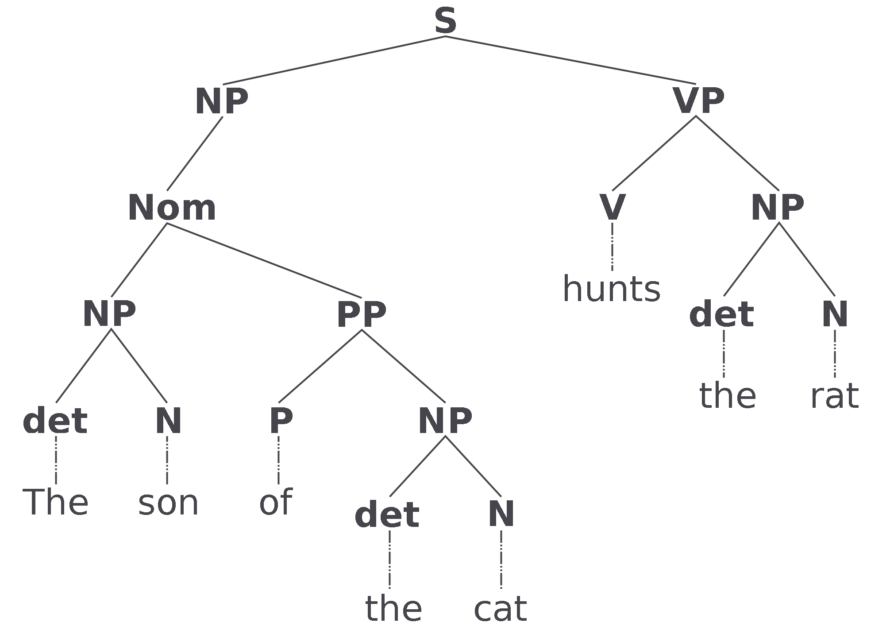
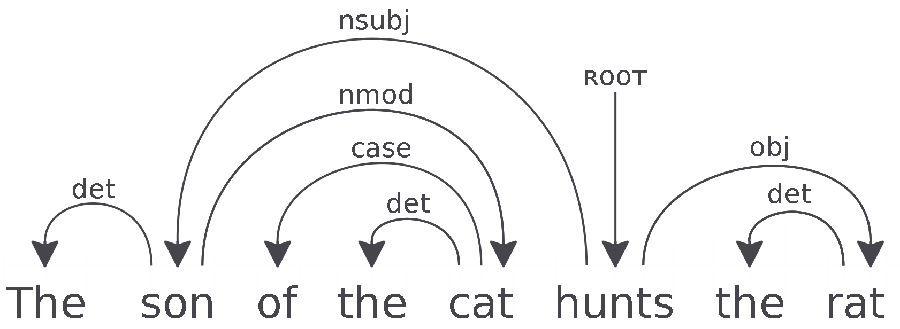

ERC Starting Grant project FASTPARSE led by Prof. Carlos Gómez-Rodríguez at the University of A Coruña.
"The main goal of this frontier research project is to develop new algorithms and techniques to improve the speed of natural language parsers, making them suitable for web-scale processing."
State-of-the-art dependency parsers can only parse about 100 sentences per second.
For large-scale analyses, this is cost-prohibitive.
And constituency parsers and non-projective dependency parsers are slower still.
The English Wikipedia corpus contains about 90 million sentences.
To parse the entirety of this document, it would take 9x109 seconds.
Or 10.4 days.
Syntactic analysis.
How do the words in a sentence relate to one another grammatically?
Consituency parsing

Dependency parsing.

Work In Progress
Slide about shift-reduce algorithms
Work In Progress
Slide about graph-based algorithms
Work In Progress
Parser Speeds
Small sample of dependency parsers.
Note: add performance data?
Parser
Algorithm Type
Speed (SPS)
One
Graph
10
Two
Shift
1000
Three
Shift
200
Four
Graph
24
Project Overview
"Chunk-and-Pass"
Implementation
Results
Work In Progress
Working memory restrictions (10 items).
Need to cast linguistic input into a hierarchical abstract representation.
Basically means using a chunker at sentence level.
Chunking
A sequence labelling task.
Each word is labelled, B, I, or O.
B
A token that begins a chunk.
Suffixed with chunk phrase type.
E.g. B-NP for a noun phrase.
I
A token inside of a chunk.
Also suffixed with chunk phrase type.
E.g. I-VP for a verb phrase.
O
Anything outside of a chunk.
Project Overview
"Chunk-and-Pass"
Implementation
Results
Implementation
1. Generating Gold Data
Automatically Extracting Rules
Pruning Rule Sets
2. "Chunk-and-Pass" Parser
Chunker
Inside Parser
Outside Parser
Chunk definition in this context:
Any grammatically related, linear combination of tokens with a length greater than 2 and with only one level of dependency.